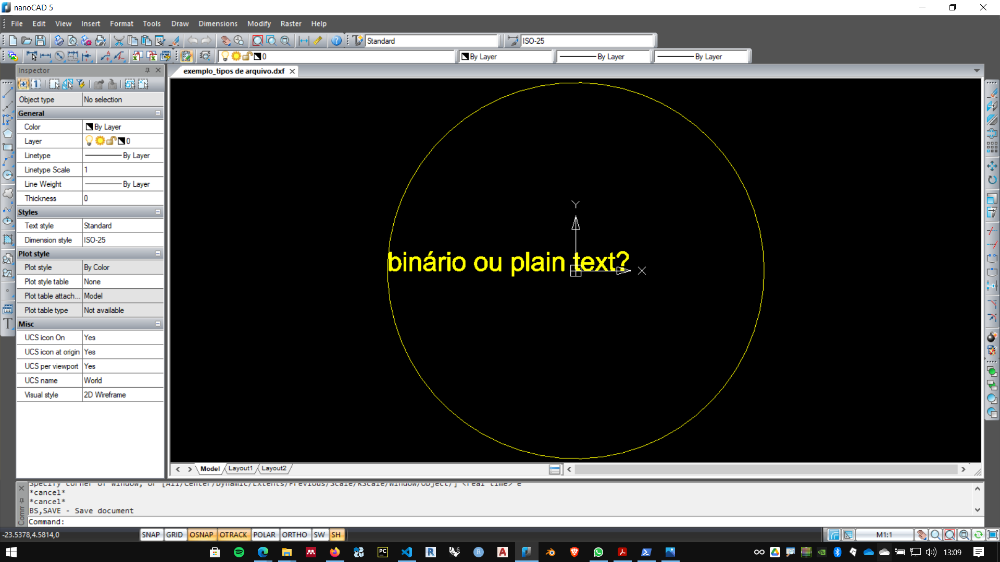
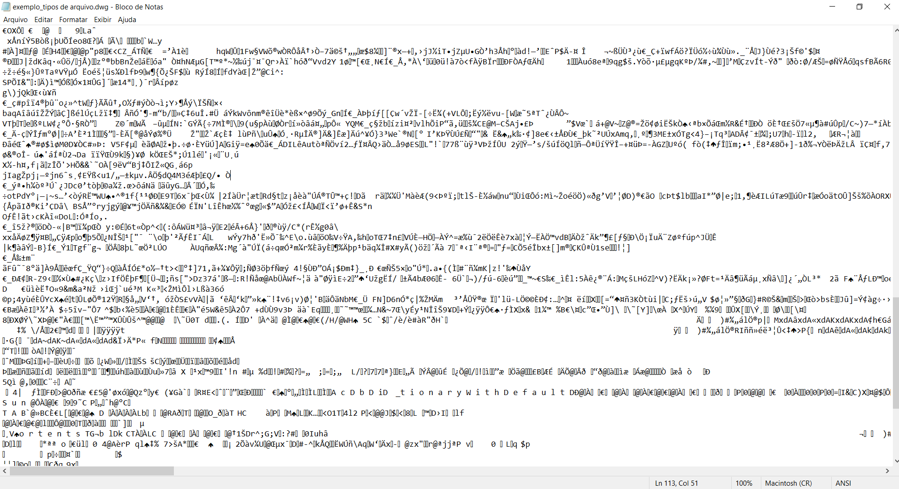
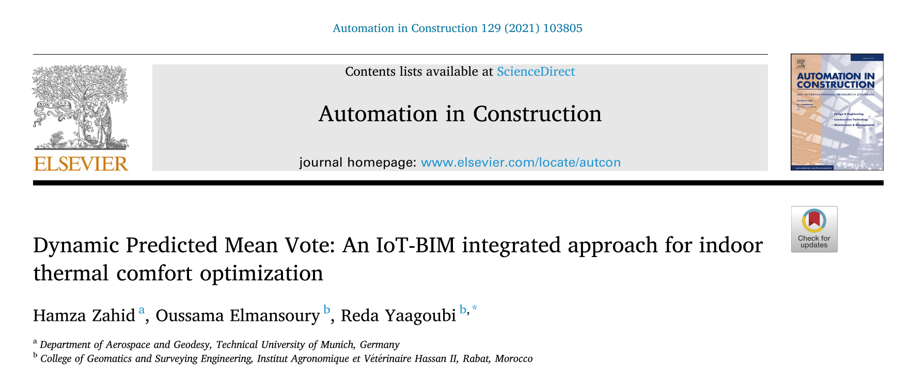
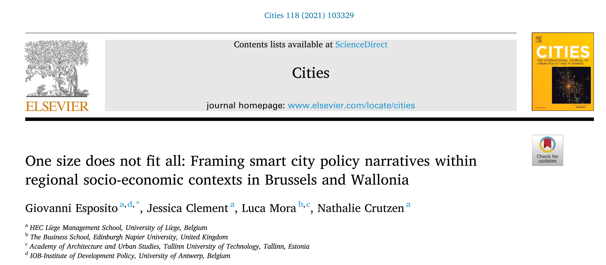
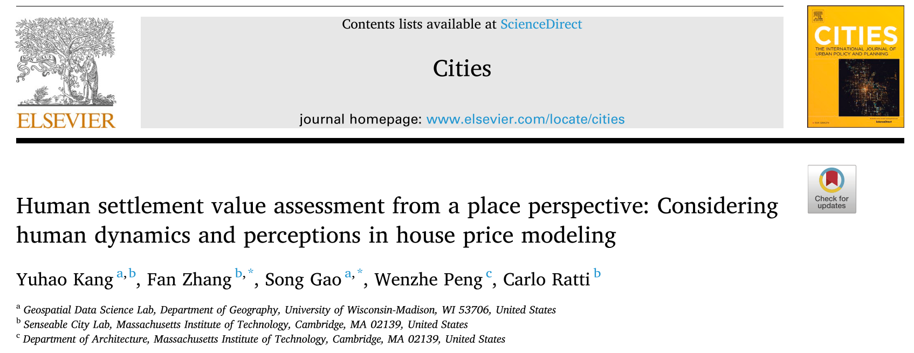

27/07/2021
workshop temas emergentes:

cidade, arquitetura e tecnologias digitais
Programação para Arquitetos e Urbanistas:
Perspectiva para Pesquisadores
Fernando Ferraz Ribeiro - fernando.ribeiro@ufba.br
"The more accurate the map, the more it resembles the territory. The most accurate map possible would be the territory, and thus would be perfectly accurate and perfectly useless."
Neil Gaiman, American Gods
Tipos de Arquivos:
Os arquivo digitais podem ser divididos em dois tipos:
- "Binários"
- Plain text
Exemplo:
Um aquivo cad contendo um círculo de raio 10, centro na origem e um texto de altura 1 foi salvo nos formatos DWG e DXF (compatíveis com Autocad 2013). Depois os aruivos foram abertos em um programa de plain text.
Arquivo DWG - Binário
Arquivo DXF - plain Text

Os programas, softwares, apps e formatos de arquivos, são definidos em arquivos de teto simples. Programar exige, dente outras habilidades, a familiaridade com os ambientes de edição de código (arquivos plain text)
Exemplos de Arquivos Plain Text Importantes no estado da arte da computação aplicada a arquitetura e urbanismo:
IFC SPF
fonte: https://technical.buildingsmart.org/standards/ifc/ifc-examples/
IFC XML
fonte: https://technical.buildingsmart.org/standards/ifc/ifc-examples/
IFC JSON
fonte: https://technical.buildingsmart.org/standards/ifc/ifc-examples/
CityGML
GeoJson
fonte: https://gist.github.com/wavded/1200773?short_path=99c1af9
Arquitetura e construção:
Panorama dos útimos artigos publicados
na revista
AUTOMATION IN CONSTRUCTION
https://www.journals.elsevier.com/automation-in-constructionLinha Editorial:
- Computer-aided design, product modeling, decision support systems, classification and standardization, product data interchange
- Computer-aided engineering, process simulation models, graphics
- Robotics, metrology, logistics, automated inspection, demolition/remediation
- Facilities management, management information systems, intelligent control systems.
Dados Biliométricos
Artigos recentes:

Conforme acesso no dia 23/07/2021
Artigo 01:
https://crossmark.crossref.org/dialog/?doi=10.1016/j.autcon.2021.103825&domain=pdfArtigo 02:
https://www.sciencedirect.com/science/article/pii/S0926580521002272?via%3DihubArtigo 03:
https://www.sciencedirect.com/science/article/pii/S0926580521002612?via%3DihubArtigo 04:
 https://www.sciencedirect.com/science/article/pii/S0926580521002569#f0005Extra:
Parametric Solutions
https://www.parametric.se/
Urbanismo e Cidades:
Panorama dos útimos artigos publicados na
revista
Cities
https://www.journals.elsevier.com/citiesLinha Editorial:
The primary aims of the journal are to analyze and assess past and present urban development and management as a reflection of effective, ineffective and non-existent planning policies; and the promotion of the implementation of appropriate urban policies in both the developed and the developing world.
Topics covered include: urban adaptation to climate change; gentrification and housing; homelessness and welfare services; urban management; public-private sector cooperation; development and planning problems; urban regeneration; neighborhood conservation and urban design; immigration and international labor migration; urban politics; urban theory; urban governance; smart cities and regions; infrastructure; livability and quality of life; greening; and the complexities of creating sustainable cities.
Every year, we also publish a handful of Viewpoints. These are articles that are shorter in nature, summative in their literature review, and offer a particular argument that could potentially generate debates among scholars and practitioners.
Each volume also features one or more City Profiles. Coverage includes a brief description of the city's historical development, an account of contemporary conditions, problems or issues, and a critical review of recent or current policy, planning or management responses.
Dados Biliométricos
Artigos recentes:
Conforme acesso no dia 23/07/2021
Artigo 01:
https://www.sciencedirect.com/science/article/pii/S0264275121002468?via%3DihubArtigo 02:
https://www.sciencedirect.com/science/article/pii/S0264275121002456?via%3DihubArtigo 03:
 https://www.sciencedirect.com/science/article/pii/S0264275121002298?via%3DihubArtigo 04:
 https://www.sciencedirect.com/science/article/pii/S026427512100233X?via%3DihubReflexões:

Reflexões:
https://d.ibtimes.co.uk/en/full/1622009/will-robots-take-over-our-jobs.jpg